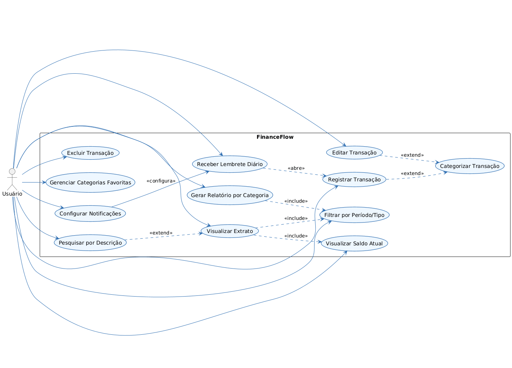

Semana 2 — Levantamento de Requisitos & Casos de Uso
FinanceFlow — Histórias de Usuário e Descrição Textual
Histórias de Usuário
-
Registrar Transação:
Como um usuário, eu quero registrar minhas transações financeiras (entradas e saídas) para que eu possa controlar meus gastos e acompanhar meu saldo atual. -
Editar Transação:
Como um usuário, eu quero editar uma transação já registrada para que eu possa corrigir valores ou categorias quando houver algum erro. -
Excluir Transação:
Como um usuário, eu quero excluir uma transação indesejada para que os relatórios e saldos reflitam corretamente minha situação financeira. -
Categorizar Transação:
Como um usuário, eu quero atribuir categorias às minhas transações para que eu possa visualizar relatórios organizados por tipo de despesa ou receita. -
Visualizar Extrato:
Como um usuário, eu quero visualizar meu extrato completo de transações para que eu tenha uma visão geral de todas as movimentações financeiras. -
Visualizar Saldo Atual:
Como um usuário, eu quero ver meu saldo atual em tempo real para que eu saiba quanto dinheiro tenho disponível. -
Filtrar por Período/Tipo:
Como um usuário, eu quero filtrar minhas transações por período ou tipo para que eu possa analisar apenas as movimentações relevantes. -
Relatório por Categoria:
Como um usuário, eu quero gerar relatórios detalhados por categoria para que eu compreenda melhor meus hábitos financeiros e otimize meus gastos. -
Configurar Notificações:
Como um usuário, eu quero configurar notificações e lembretes para que eu não me esqueça de registrar minhas transações diárias. -
Receber Lembrete Diário:
Como um usuário, eu quero receber notificações diárias para registrar minhas despesas para que eu mantenha meu controle financeiro sempre atualizado. -
Pesquisar por Descrição:
Como um usuário, eu quero pesquisar transações por palavras-chave para que eu encontre rapidamente uma transação específica. -
Gerenciar Categorias Favoritas:
Como um usuário, eu quero gerenciar minhas categorias favoritas para que eu agilize o processo de categorização de novas transações.
Descrição Textual dos Casos de Uso (principais)
1) Registrar Transação
Ator principal: Usuário
Permite ao usuário registrar uma nova transação financeira, informando valor, data, tipo (receita/depesa), descrição e categoria. O sistema armazena a transação, atualiza o saldo e passa a exibi-la no extrato.
Fluxo Principal
- O usuário seleciona “Registrar Transação”.
- O sistema solicita valor, descrição, tipo, data e categoria.
- O usuário preenche os campos e confirma.
- O sistema valida as informações.
- O sistema registra a transação e atualiza o saldo.
- O sistema exibe mensagem de sucesso.
- Opcionalmente, o sistema estende para Categorizar Transação automática.
Fluxos Alternativos
- 4a. Dados inválidos/ausentes: o sistema informa o erro e solicita correção.
Relações
«extend»Categorizar Transação«include»Visualizar Saldo Atual«include»Visualizar Extrato
2) Visualizar Extrato
Ator principal: Usuário
Permite ao usuário consultar todas as transações registradas com data, valor, tipo e categoria. O extrato pode ser filtrado por período e tipo de transação.
Fluxo Principal
- O usuário acessa “Visualizar Extrato”.
- O sistema mostra a lista de transações em ordem cronológica.
- O usuário pode aplicar filtros por período e/ou tipo.
- O sistema atualiza a listagem conforme os filtros.
- O usuário pode abrir uma transação para detalhes.
Fluxos Alternativos
- 3a. Sem filtros: o sistema exibe todas as transações.
- 5a. O usuário pode estender para Pesquisar por Descrição.
Relações
«include»Filtrar por Período/Tipo«extend»Pesquisar por Descrição
Diagrama de Casos de Uso
